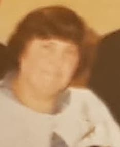

Rosemary Irene Peggy Vears (née Lawrence) 1938 - 2007
[ Home ] | [ Calendar ] | [ Surnames Index ] | [ Family History ]The twin sister of Peter J B and the daughter of Thomas Lawrence (a builder) and Florence Lawrence, Rosemary Lawrence, the first cousin once-removed on the mother's side of Nigel Horne, was born in Eastry, Kent, England on Jun 1, 19381,2 along with her twin brother Peter J B and married Brian Vears (with whom she had 3 children: Andrew Philip, Wendy S and Yvonne Rosemary, along with 2 surviving children) in Dover, Kent, England around May 19593.
Throughout her life, she lived at The Lodge, Studdal, Kent on Sep 29, 19395; and on 6 Claremont Road, Deal, Kent in 20034.
She died on Jun 19, 2007 in Deal, Kent2.
Parents
- Thomas William was born on Aug 9, 1881
- Florence Eva was born on Nov 23, 1906
Children
- Andrew Philip was born on Aug 29, 1960
Citations
- England & Wales births 1837-2006 - Findmypast
- United Kingdom Deaths 2007-2017 - Findmypast
- England & Wales Marriages 1837-2005 - Findmypast
- UK, Electoral Registers, 2003-2010
- According to parents' record.
Media
Rosemary Lawrence

England & Wales births 1837-2006 - BMD/B/1938/3/AZ/000709/015
United Kingdom Deaths 2007-2017 - BMD/D/MILLEN/000341716
England & Wales Marriages 1837-2005 - BMD-M-1959-2-AZ-000618-027
Family Tree

Generated by Ged2Site. Last updated on Jul 20, 2025